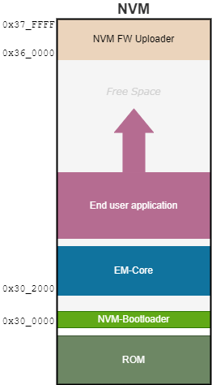
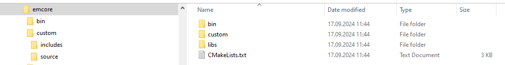

EM-Core
Overview
The EM-Core package provides a lightweight standalone and autonomous application as well as a set of functions that can be directly used as support functions by the end user application. The symbols file that contains the name of the available functions is provided with the SDK. It contains the list of the functions available in the “standard” EM-Core and that can be used within the end user application.
The EM-Core application is a standalone application that reside in NVM.
The following figure shows where the EM-Core standalone application firmware image sits in the NVM.
{kind=link}
The EM-Core image is stored at the beginning of the second memory page at address 0x30_2000 which is its default location. However, it can be stored at any other location provided the fact that its first address shall be bounded to the beginning of the page where it is stored.
Further in memory, the end user application software is stored and in case firmware update process is needed, then the firmware update application is stored usually at the end of the memory.
To have the device being able to start-up, the bare minimum is to have:
NVM_bootloader
EM-Core
With this configuration, the device can be started in the “EM-Core” mode. However, this EM-Core package is not mandatory and can be skipped if the application software is present. In such a case, the end user application will be started. However, both the EM-Core and the end user application can share the same NVM space in case the application relies on a set of functions provided by EM-Core. In this case, the default behavior is to start executing the end user application. But the EM-Core standalone application can still be executed on demand.
Beyond the available standard EM-Core that is provided within the SDK, the user has the possibility to build his/her own homebrewed EM-Core that would serve as a foundation for the application. More details are provided further in this page on how to build and to use a custom EM-Core.
In case the end user application is not programmed yet in the device, it is still possible to start-up the EM-Core standalone application.
Supported HCI commands
In order to communicate with EM-Core, a set of HCI commands is supported. All
these commands are gathered within the so called EMSystem (abbreviated EMS). This is why each
such commands name starts with this prefix. It is completed by one or two additional letters that give information to which subsystem the command belongs to according to the following scheme:
G: General
S: Security
RC: Radio Control
MM: Memory Management
For example, the command EMSRC_TransmitterTest deals with the radio subsystem and actually starts a test procedure of the radio transmitter.
The following table summarizes the list of HCI commands that the EMSystem supports.
Command |
Description |
|---|---|
EMSG_CpuReset |
Issue a CPU reset |
EMSG_EnterConfigurationMode |
Reboot in Configuration Mode (ROM) |
EMSG_GetEmCoreInformation |
Get EM-Core information (version, variant) |
EMSG_SetBootModeFlags |
Set persistent boot mode selection flags |
EMSG_ClearBootModeFlags |
Clear persistent boot mode selection flags |
EMSG_ReadMACAddress |
Read the MAC Address from Info Page |
EMSG_ReadProductInformation |
Read the Product Information |
EMSRC_ReceiverTest |
Start receiver test |
EMSRC_ReceiverTestEnd |
Terminate receiver test |
EMSRC_TransmitterTest |
Start transmitter test |
EMSRC_TransmitterTestEnd |
Terminate transmitter test |
EMSRC_StartAdvPattern |
Start advertising pattern for current measurement in production |
EMSS_LeRand |
Request a random number |
EMSS_LeEncrypt |
Encrypt data using AES hardware engine |
EMSS_LE_Decrypt |
Decrypt data using AES hardware engine |
EMSS_LE_Encrypt_KC |
Encrypt data using AES hardware engine with the key container in information page 0 |
EMSS_LE_Decrypt_KC |
Decrypt data using AES hardware engine with the key container in information page 0 |
EMSMM_Read_At_Address |
Read one or more bytes at the given address |
EMSMM_Write_At_Address |
Write one or more bytes at the given address |
EMSG_Set_Sleep_Options |
Enable or disable sleep mode |
Sending these commands can be done on a host computer connected to the device (the DVK) and running the BLEngine tool.
For example, to trigger a CPU reset, the following command shall be issued:
$ python blengine_cli.py send EMSG_CPU_RESET
When the end user application is running and there is a need to start the EM-Core standalone application, the following procedure can be issued:
$ python blengine_cli.py run restart --mode=emcore
It will end-up in running the EM-Core standalone application.
To get more details on the execution of this command, the option --debug can be added:
$ python blengine_cli.py --debug run restart --mode=emcore
EM-Core Built-in Libraries
The default standard EM-Core includes the following libraries:
Command |
Description |
|---|---|
Metaware |
Metaware libraries |
em_core |
EM-Core standalone Application |
em_hw_api |
Hardware support for EM930x family of SOC |
em_system_emcore |
EM System support for EM-Core (set of EM System Commands) |
header_access |
Functions to get access to firmware image headers |
nvm_entry_emcore |
Entry function in NVM and boot selection |
pml |
Power Management logic |
radio |
Radio driver |
prot_timer |
Protocol Timer |
sleep_timer |
Sleep Timer |
rc_calib |
RC Calibration library |
sleep_manager |
Sleep manager |
transport |
Transport manager |
QPC |
QPC Library |
Building an application for EM-Core
In order to build an application using a given version of EM-Core, the CMake macro
GENERATE_EMCORE_APPLICATION() shall be used in the application CMakeLists.txt file.
See below this page the EM-Core integration part for a comprehensive description of
this macro.
By default, EM-Core based applications are built for the latest EM-Core version available in the SDK.
In order to build an application based on EM-Core, the CMake macro GENERATE_EMCORE_APPLICATION() shall be used.
It accepts the following parameters:
# \param: target -> this is the name of the executable target.
# \param: emcore -> must be one of EMCORE_VARIANT with optional version E.g., "standard;v1.0.0"
# \param: source_files -> list of source files to be compiled
# \param: include_files -> list of header files to be included
# \param: flags -> list of compile flags to be added. Use "" for no flags.
# \param(optional): libs -> list of libraries to be linked to the application.
# should not be one of 'EMCORE_LIBS_*'
#
# Example:
# GENERATE_EMCORE_APPLICATION(my_target "standard"
# "${${PROJECT_NAME}_SRCS}" "${${PROJECT_NAME}_INCLUDES}"
# "${STANDARD_CONFIG}" "my_custom_lib"
# )
The code snippet below shows an example on how to trigger the generation of an application that uses EM-Core. In this example, the generated executable will be named with <application>_emcore with EM-Core as a suffix in the application’s name.
SET(targets_emcore_flavor "standard")
APP_IN_NVM()
ARC_EXECUTABLE(${PROJECT_NAME} ${${PROJECT_NAME}_SRCS})
ARC_LINK_LIBRARIES(${PROJECT_NAME} ${${PROJECT_NAME}_LIBS})
ARC_INCLUDE_DIRECTORIES(${PROJECT_NAME} ${${PROJECT_NAME}_INCLUDES})
GENERATE_EMCORE_APPLICATION(${PROJECT_NAME}_emcore "${targets_emcore_flavor}"
"${${PROJECT_NAME}_SRCS}" "${${PROJECT_NAME}_INCLUDES}"
"-DNO_FLINT_ERRORS"
"${${PROJECT_NAME}_EMCORE_LIBS}")
The macro instructs the build system to create an EM-Core based application and the final executable’s name will contain the suffix _emcore.
For backward compatibility, it is possible to build an application for an older version of EM-Core.
This can be done by setting the Em-Core version as an optional parameter in the Variant configutration in CMakeLists.txt.
### Setting the variant and the version of EM-Core.
### available 'desired_variant' can be found under emcore/bin
SET(target_emcore_variant "<desired_variant>;vX.X.X")
### Using EMCORE
GENERATE_EMCORE_APPLICATION(${PROJECT_NAME}_spi_emcore "${target_emcore_variant}"
"${${PROJECT_NAME}_SRCS}" "${${PROJECT_NAME}_INCLUDES}" ""
)
List of EM-Core Variants
This SDK provides a standard EM-Core configuration with the above listed built-in libraries.
Command |
Description |
|---|---|
standard |
Standard Version of EM-Core |
Each EM-Core variant comes with an additional target which name contains the suffix _no_crc_check (e.g. emcore_standard_no_crc_check.ihex). Such variant includes the exact same functionalities than the variant without this suffix provides except that the image integrity (CRC check) is not verified at power on reset.
Depending on the lifecycle and production flow, CRC may be verified by other means. Therefore, this functionality may save boot time and energy in some specific contexts.
Custom EM-Core
Instead of using the provided default EM-Core, the end user has the possibility to build his/her own homebrewed EM-Core by adding new custom items or by removing uneeded items. This customized flavor can then be linked against the end user application to create the final application that relies onto this custom EM-Core.
Warning
In case a customized EM-Core is created and used, it shall be programmed in the NVM along with the end user application that makes use of it. Even if the both the custom EM-Core flavor and the standard one have the same source code, a standard EM-Core must not be mixed with a sample application designed to run with the custom flavor, and inversely. In such a case of mixed configuration, the sample application might not be able to start.
The following picture shows the custom EM-Core folder in the SDK.
{kind=link}
The source code and all build configuration files are provided in the emcore/custom folder. The emcore/bin folder contains the standard default binary version provided in the SDK along with the NVM_Bootloader.
The EM-Core source code is located in both the emcore/custom/includes and in emcore/custom/source folders.
It corresponds to the standard default EM-Core.
Building the custom EM-Core flavor distributed in the SDK
To showcase how to build a custom EM-Core flavor, a custom version of EM-Core is provided within the SDK. Its name is my_flavor.
First run the command to create the build environment within the SDK:
$ cd <sdk>
$ ./init.bat
Then build this EM-Core flavor named my_flavor:
$ cd build
$ cmake --build . --target emcore_custom_my_flavor
After build, all files are installed within the following folder:
<sdk>/emcore/bin/v4.1/my_flavor
Defining a custom flavor
Beyond using the EM-Core flavor provided in the SDK, the user has the possibility to create his own version of EM-Core. The following steps show how this can be done.
The file emcore/custom/custom_emcore_def.cmake is where the name of the user flavor’s name is defined.
SET(CUSTOM_EMCORE_FLAVORS my_flavor:15)
The name “my_flavor”” shall be replaced by any name relevant to the user defined configuration, with the exception to the “standard” name.
SET(CUSTOM_EMCORE_FLAVORS custom_flavor:1234)
Tweaking the .cmake file
The file emcore/custom/custom_emcore.cmake is the actual file that will be processed by CMake to create the custom EM-Core. This is also the place where the user can list his/her own source files and/or libraries.
Generally speaking, the user will tweak the content of this file to customize his/her own EM-Core flavor. This requires having a quite good knowledge of CMake files syntax, but nothing fancy here.
Any reference to the “my_flavor” pattern shall be changed to match with the user defined flavor’s name.
Let’s consider a new ‘custom_flavor’ version. The following statements shall be changed in the file.
First, set the name of the custom EM-Core library. This will define the name of the output file for this specific EM-Core in the <sdk>/build/emcore/custom folder.
SET(CUSTOM_EMCORE_LIBS
emcore_information_custom_flavor
# Add the libraries you want to include to your custom EM-Core
)
Then, change the name of the variable that contains the list of header files to include:
SET(CUSTOM_EMCORE_INCLUDES__custom_flavor
${CUSTOM_EMCORE_INCLUDES_COMMON}
)
Then, the variable that lists the libraries to link against shall also have its name changed for this flavor:
SET(CUSTOM_EMCORE_LIBS__custom_flavor
${CUSTOM_EMCORE_LIBS_COMMON}
${CUSTOM_EMCORE_LIBS}
)
Note that for all these modifications, only the suffix is changed:
_my_flavor==>_custom_flavor
Adding a missing library
Whenever the standard EM-Core does not contain a library that is needed, it can be easily added.
Let’s take the unitimer example to be added in a custom flavor of EM-Core. Still in the custom_emcore.cmake file, the include folder where the unitimer header file is located is introduced by adding it to the CUSTOM_EMCORE_INCLUDES__custom_flavor variable:
SET(CUSTOM_EMCORE_INCLUDES__custom_flavor
${CUSTOM_EMCORE_INCLUDES_COMMON}
${LIBS_DIR}/unitimer/includes
)
This statement is mandatory to get access to the unitimer header file.
Then, to successfully link the EM-Core with this library, the following statement shall be added in the variable CUSTOM_EMCORE_LIBS__custom_flavor:
SET(CUSTOM_EMCORE_LIBS__custom_flavor
${CUSTOM_EMCORE_LIBS_COMMON}
${CUSTOM_EMCORE_LIBS}
unitimer
)
And that’s it. The next step is to build this EM-Core flavor as shown in the next step.
Building the EM-Core custom flavor
Re-execute the init.bat script to recreate the build environment:
$ cd <sdk>
$ ./init.bat
Note that this command will erase a previously built build folder. This step is mandatory to create the specific user defined EM-Core target so it can be built.
Then, building the EM-Core custom flavor is done by issuing the following command:
$ cd build
$ cmake --build . --target custom_emcore_custom_flavor
The target name starts with custom_emcore_ and is followed by the name of the flavor to be built.
Building the application and linking with user EM-Core
The last step to complete is to instruct the build system to link with the user defined EM-Core when building an app instead of linking with the standard one.
Let’s take the nvm_emb_hrs sample application as an example.
Looking at its CMakeLists.txt file, the following lines are where the magic takes place:
SET(targets_emcore_flavor "standard")
APP_IN_NVM()
ARC_EXECUTABLE(${PROJECT_NAME} ${${PROJECT_NAME}_SRCS})
ARC_LINK_LIBRARIES(${PROJECT_NAME} ${${PROJECT_NAME}_LIBS})
ARC_INCLUDE_DIRECTORIES(${PROJECT_NAME} ${${PROJECT_NAME}_INCLUDES})
GENERATE_EMCORE_APPLICATION(${PROJECT_NAME}_emcore "${targets_emcore_flavor}"
"${${PROJECT_NAME}_SRCS}" "${${PROJECT_NAME}_INCLUDES}"
"-DNO_FLINT_ERRORS"
"${${PROJECT_NAME}_EMCORE_LIBS}"
)
As it can be seen, the variable targets_emcore_flavor defines the EM-Core flavor that shall be used. The user defined flavor shall be written here instead of standard.
SET(targets_emcore_flavor "custom_flavor")
Optionally, the first parameter of the GENERATE_EMCORE_APPLICATION macro can be change to be more representative of the user define version of the application. Consequently, the suffix _emcore can be changed to something else. But this modification is not mandatory.
Then, the application can be built by issuing the following command in the SDK folder:
$ cd build
$ cmake --build . --target nvm_emb_hrs_emcore
Note that this command instructs to build the new EM-Core flavor. But the exact version (or name) is specified within the .cmake file.
And that’s it!
The generated EM-Core is located in the <sdk>/build/emcore/custom and the generated files are shown in the screenshot below:
{kind=link}
In particular, the file custom_emcore_custom_flavor_di05.ihex is the one that shall be programmed in the NVM.
And the nvm_emb_hrs_emcore application that uses this custom flavor has been built in <sdk>/build/projects/nvm_emb_hrs as shown in the following screenshot:
{kind=link}
Same as above, the .ihex file is the one to use to program in the NVM.
Change Log
Version 4.1.0
Integrate EM HW API driver v1.0.0
Integrate Radio driver v0.9.0
Integrate NVM driver v0.3.1
Version 4.0.0
Integrate Radio driver version 0.8.0
Integrate PML driver version 0.6.0
EM-Core versioning is aligned with SDK version
Version 3.5.0
Ensure EMSRC_ReceiverTestEnd sends the correct information when the receiver test has not been initiated.
Integrate em_hw_api driver version 0.2.0
Integrate QPC driver version 0.2.0
Integrate PML driver version 0.6.0
Integrate Radio driver version 0.7
Version 3.4.0
PR6458 - Enable division by zero exception durig wakeup and power on reset (POR).
Version 3.3.0
Radio transmitter control improvement for power consumption optimization
Power consumption improvement (Tx pulse)
CTE functions moved to AoA / AoD library for direction finding
Set Rx Max PDU length (BLE Audio fix for BIS)
Version 3.1.0
Add support for di05
Improve the previous fix regarding STATUS content when task switching in QP/C by setting or retaining only required bits U, DZ, SC, AD and US according to compilation definitions.
Radio:
Fix +8 and +10 dBm RF Output Power
Version 2.6.0
Bug fix in Transmitter Test command
Return an error when packet length overtake the maximum allowed size for test packets in DTM mode only.
Improvement of Transmitter and Receiver Tests:
Add parameter check for the lower boundaries
Radio driver initialization done only once during EM-Core initialization
Restoring full STATUS content when task switching in QP/C. With this new version, all the bits keep their former values during task switching under QP/C control.
PML Driver: Adjust the SCDB Mode Multiplier to double when the supply goes from 1.5 to 1.1v to avoid Brownout reset.
Fix RSSI value computation in Direct Test Mode (DTM)
DI04 support added
Introduction of the standard version of EM-Core
Enabling pull-down configuration on GPIO6 & GPIO7
Fix packet error rate (PER) problem in EM-Core Radio test RX command.
Improvement of Radio configuration robustness with respect to HF-XTAL switching
Fix a power consumption issue in Step Down power mode
EM-Core includes new test commands used at wafer level.
EMSS_LE_Decrypt, EMSS_LE_Decrypt_KC and EMSS_Encrypt_KC (Key Container).
EMSMM_Read_At_Address and EMSMM_Write_At_Address available in EM-Core for production purpose.
EMSG_Set_Sleep_Options command available in EM-Core for production purpose.
EM-Core Radio Test commands have also been updated to improve wafer test sequence.
EMSRC_Start_ADV_Pattern starts advertising immediately after the command is received.
EM-Core is available in legacy form and also with the no_crc_check option.
Version 1.0.0
Initial Version